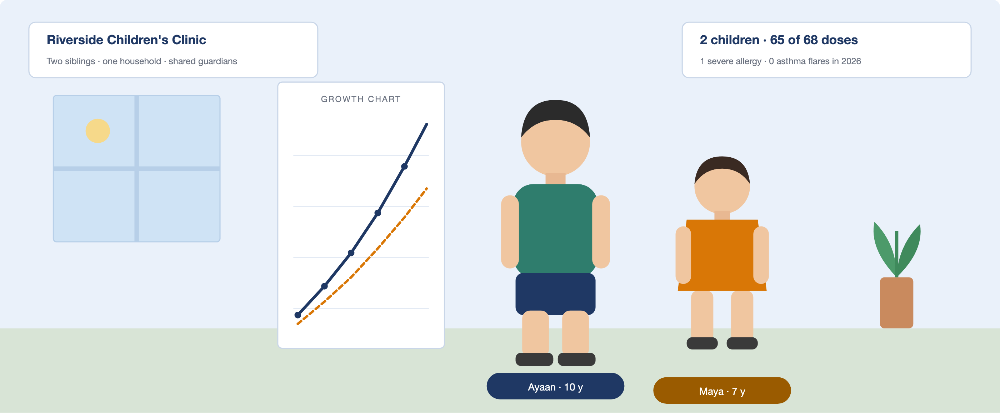
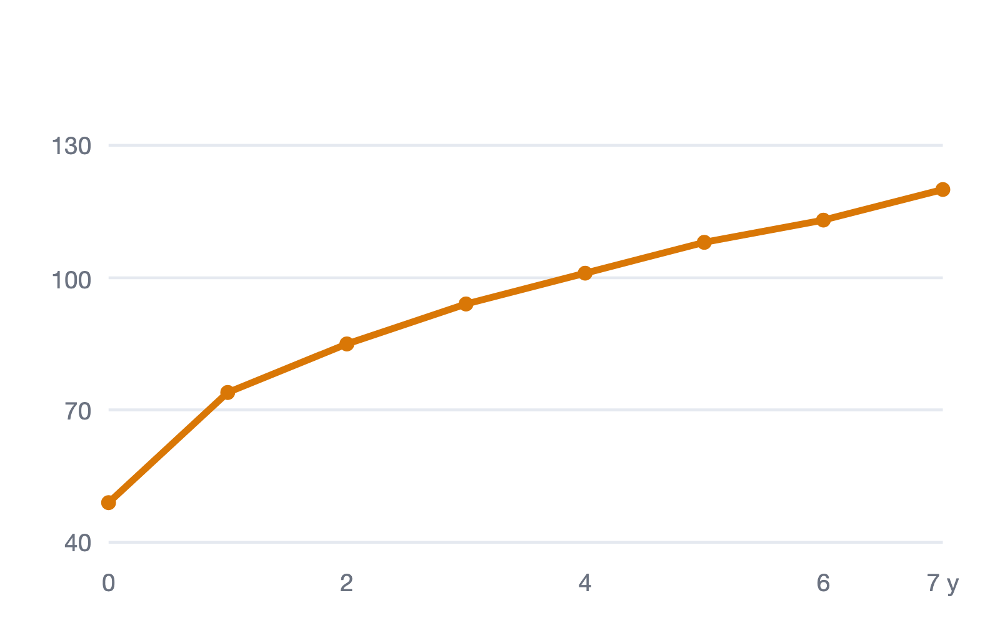
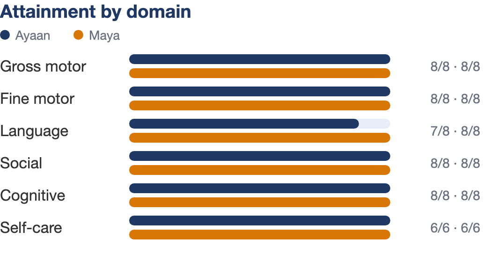
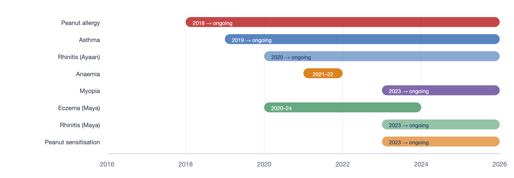
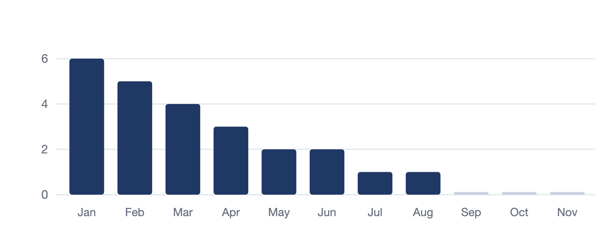
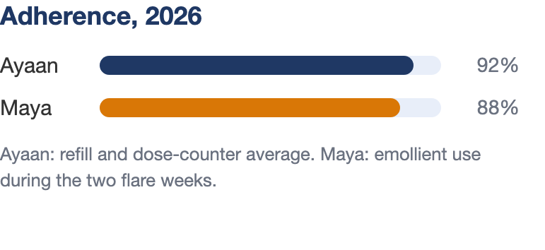
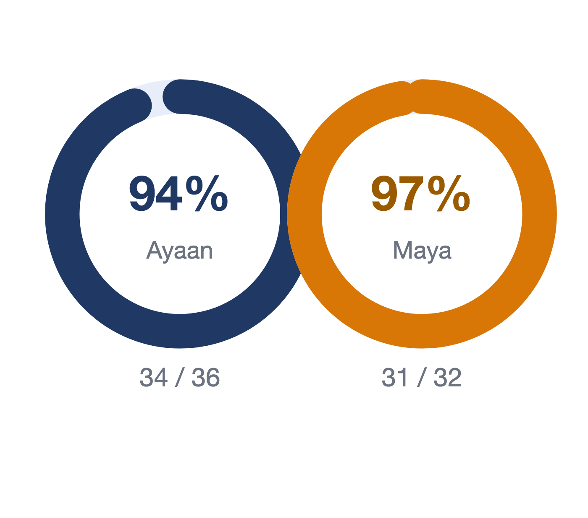
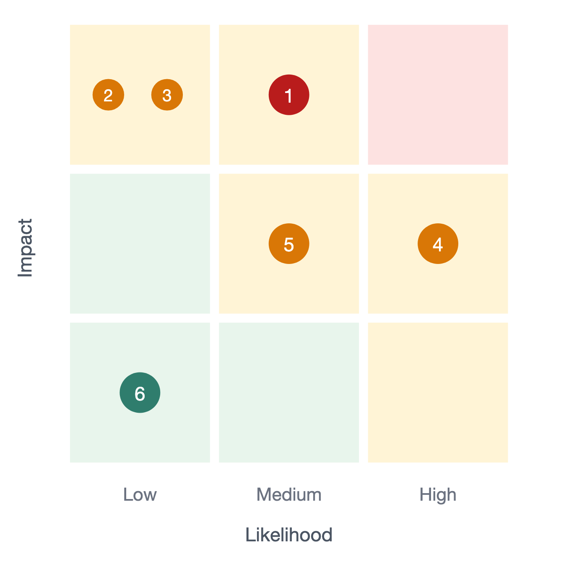

| Children | Ayaan (10 y) · Maya (7 y) | Date of birth | 14 Mar 2016 · 22 Jul 2019 |
| Sex | Male · Female | Blood group | O positive · A positive |
| Guardians | Sana & Rizwan Siddiqui | Record IDs | RCC-PED-2016-0417 RCC-PED-2019-0892 |
Demo note. All names, dates, measurements, clinicians and events in this record are fictional. The document intentionally mixes narrative text, tables, charts and relationship diagrams so it can be used to demonstrate multimodal retrieval, grounded question answering and cross-record reasoning.
Narrative text section — one household, two different clinical trajectories
The Siddiqui household has two children. Ayaan, 10, has mild persistent asthma, an IgE-mediated peanut allergy, allergic rhinitis and myopia; his iron-deficiency anaemia resolved in 2022. Maya, 7, has a history of atopic dermatitis that cleared in 2024, seasonal rhinitis, and peanut sensitisation without clinical allergy. Both attend school full-time and live with their parents in Karachi.
2026 was a stable year for both children. Ayaan had no asthma exacerbation and no rescue-inhaler use after August. Maya had no eczema flare lasting more than two weeks and no allergic reaction; her peanut-specific IgE remains low at 0.8 kU/L, which is why she carries no adrenaline auto-injector. The household keeps one shared allergy plan and two auto-injectors for Ayaan — one at home, one at school.
| Child | Priority | 2026 target | Year-end status |
|---|---|---|---|
| Ayaan | Asthma control | 0 exacerbations; ≤2 rescue days/week | Achieved: 0 exacerbations; 0 rescue days in Q3 |
| Ayaan | Immunisation | HPV and influenza on schedule | In progress: 34/36; HPV dose 1 due November |
| Maya | Eczema control | No flare longer than 2 weeks | Achieved: none since March |
| Maya | Allergy monitoring | Annual IgE; no clinical reaction | Achieved: IgE 0.8 kU/L; no reaction |
| Maya | Vision screening | Annual school screening | Achieved: 6/6 both eyes; review 2027 |
| Relative | Condition | Relevance to the children |
|---|---|---|
| Father, 41 | Childhood asthma (resolved at 14); peanut intolerance | Explains Ayaan's atopic and asthma pattern |
| Mother, 38 | Allergic rhinitis | Both children have seasonal rhinitis |
| Paternal grandfather | Asthma, eczema | Second-degree atopic history |
| Maternal grandmother | Type 2 diabetes | Household nutrition monitoring only |
Comparison table + one height chart per child
| Child | Age | Height (cm) | Height %ile | Weight (kg) | Weight %ile | BMI | BMI %ile |
|---|---|---|---|---|---|---|---|
| Ayaan | Birth | 50.0 | 50th | 3.4 | 45th | — | — |
| Ayaan | 4 y | 103.0 | 58th | 16.0 | 52nd | 15.1 | 55th |
| Ayaan | 7 y | 122.0 | 58th | 22.5 | 48th | 15.1 | 45th |
| Ayaan | 10 y | 138.0 | 55th | 30.5 | 45th | 16.0 | 40th |
| Maya | Birth | 49.0 | 45th | 3.1 | 40th | — | — |
| Maya | 2 y | 85.0 | 50th | 11.8 | 45th | 16.3 | 55th |
| Maya | 5 y | 108.0 | 52nd | 17.4 | 48th | 14.9 | 45th |
| Maya | 7 y | 120.0 | 50th | 21.5 | 46th | 14.9 | 42nd |

Both children remain within the 40th–60th percentile band for height, weight and BMI. Ayaan's BMI is 16.0 (40th percentile) and Maya's is 14.9 (42nd) — healthy for age. The only growth flag is Ayaan's weight between ages four and six, which coincided with the iron-deficiency diagnosis on page 5 and resolved within two months of treatment. Maya's weight gain has averaged 2.6 kg per year since age five, with no percentile crossing.
Sibling comparison table + attainment by domain
| Domain | Milestone | Expected | Ayaan | Maya | Status |
|---|---|---|---|---|---|
| Gross motor | Walks independently | 12–15 mo | 12 mo | 13 mo | On time |
| Fine motor | Mature pencil grip | 4–5 y | 4 y 6 mo | 4 y 2 mo | On time |
| Language | 50+ words, two-word phrases | 18–24 mo | 24 mo | 20 mo | Ayaan: delay |
| Language | Fluent sentences | 3 y | 3 y 2 mo | 2 y 9 mo | Resolved |
| Social | Cooperative play | 3–4 y | 3 y 6 mo | 3 y 4 mo | On time |
| Cognitive | Reads simple sentences | 6–7 y | 6 y 4 mo | 5 y 10 mo | On time |
| Self-care | Ties shoelaces | 5–6 y | 5 y 9 mo | 5 y 3 mo | On time |

All domains are age-appropriate for both children at the 2026 review. Maya's early reading is a strength, not an outlier requiring assessment. Ayaan's language history is documented because it explains the speech-therapy referral that was considered and then cancelled at age three; no ongoing support is in place.
Problem list for both children + shared condition timeline
| Child | Condition | Diagnosed | Status | Current management |
|---|---|---|---|---|
| Ayaan | Peanut allergy (IgE-mediated) | Mar 2018 | Active | Strict avoidance; adrenaline auto-injector |
| Ayaan | Mild persistent asthma | Jun 2019 | Active, controlled | ICS 50 µg twice daily; salbutamol PRN |
| Ayaan | Allergic rhinitis | Apr 2020 | Active, seasonal | Cetirizine; nasal saline |
| Ayaan | Iron-deficiency anaemia | Feb 2021 | Resolved 2022 | Ferrous sulfate for 6 months |
| Ayaan | Myopia | Sep 2023 | Active | Spectacles −1.25 D |
| Maya | Atopic dermatitis | Jan 2020 | Resolved 2024 | Emollients; no active treatment |
| Maya | Allergic rhinitis | Mar 2023 | Active, seasonal | Cetirizine in season |
| Maya | Peanut sensitisation | Nov 2023 | Active, monitored | No avoidance; annual IgE; no AAI |

Ayaan's asthma followed three wheeze episodes in the winter of 2019 and a positive bronchodilator trial; exacerbations fell from five in 2019 to none in 2026. Maya's eczema began in infancy, was managed with emollients and intermittent topical steroids, and has been inactive since March 2024. Her peanut sensitisation was found on a screening panel after Ayaan's diagnosis — a sibling-driven test, not a clinical reaction — and specific IgE has remained below 1 kU/L since.
Medication table for both children + adherence comparison
| Child | Medication | Dose | Frequency | Indication | Status |
|---|---|---|---|---|---|
| Ayaan | Fluticasone propionate (ICS) | 50 µg | 2 puffs twice daily | Asthma controller | Active |
| Ayaan | Salbutamol | 100 µg | 2 puffs as needed | Rescue bronchodilator | Active |
| Ayaan | Cetirizine | 5 mg | Once daily, Mar–Jun | Allergic rhinitis | Seasonal |
| Ayaan | Adrenaline auto-injector | 0.15 mg | Emergency only | Peanut anaphylaxis | Active |
| Ayaan | Ferrous sulfate | 3 mg/kg/day | Once daily | Iron-deficiency anaemia | Completed 2022 |
| Maya | Emollient (ceramide cream) | — | Twice daily during flares | Atopic dermatitis | Completed 2024 |
| Maya | Hydrocortisone 1% | Thin layer | Once daily, max 7 days | Eczema flare | As needed |
| Maya | Cetirizine | 5 mg | Once daily, Mar–Jun | Allergic rhinitis | Seasonal |


Ayaan's controller adherence averaged 92% and his rescue use fell to zero by September; no oral corticosteroid course was needed. Step-down to once-daily ICS can be considered after 12 symptom-free months, in late 2027. Maya's treatment load is now minimal: emollients only during flares, with hydrocortisone reserved for seven-day courses. Her 2026 adherence figure reflects two short flare weeks in February and March, not daily therapy.
Allergy profile for both children + coverage + full schedule
| Child | Allergen | Reaction | Severity | Action |
|---|---|---|---|---|
| Ayaan | Peanut | Urticaria, lip swelling, wheeze | Severe (grade 3) | Avoidance; AAI 0.15 mg |
| Ayaan | Dust mite | Rhinitis, sneezing | Moderate | Avoidance; cetirizine |
| Ayaan | Penicillin | Maculopapular rash | Mild | Avoid; alt. antibiotics |
| Maya | Peanut (sensitised) | None to date; IgE 0.8 kU/L | Monitor only | Monitor; annual IgE |
| Maya | Dust mite | Mild rhinitis | Mild | Saline; cetirizine |

| Vaccine | Ayaan | Maya | Note |
|---|---|---|---|
| DTaP | 5 / 5 | 5 / 5 | Complete; booster due at 11 |
| Polio (IPV) | 4 / 4 | 4 / 4 | Complete |
| MMR | 2 / 2 | 2 / 2 | Complete |
| Varicella | 2 / 2 | 2 / 2 | Complete |
| Hepatitis B | 3 / 3 | 3 / 3 | Complete |
| Pneumococcal (PCV) | 4 / 4 | 4 / 4 | Complete |
| Hib | 4 / 4 | 4 / 4 | Complete |
| Influenza (annual) | 7 / 7 · due Oct | 6 / 6 · due Oct | Both booked |
| HPV | 0 / 2 · Nov | Not due | Ayaan dose 1 booked 12 Nov 2026 |
| MenACWY | Due at 11 | Not due | Ayaan booster at 11 y (2027) |
Both children are up to date for age. Ayaan's only open items are the first HPV dose (booked) and the annual influenza vaccine; his MenACWY booster falls in 2027. Maya's schedule is complete apart from the 2026 influenza dose. No vaccine has been refused by either family; the only delay was a two-week postponement of Ayaan's MMR dose two during a febrile illness in 2022.
Information-bearing relationship map + relationship tables
| Person | Relationship | Data they can access |
|---|---|---|
| Sana Siddiqui | Mother · guardian | Full record for both children |
| Rizwan Siddiqui | Father · guardian | Full record for both children |
| Dr. Hina Qureshi | Paediatrician | Both records · 19 shared visits |
| Dr. Marcus Feld | Allergist | Ayaan only · allergy + immunisation |
| Aisha Bello | Asthma nurse | Ayaan only · asthma + medication |
| Dr. Leila Nadeem | Dermatologist | Maya only · eczema history |
| From → to | Cardinality | Example |
|---|---|---|
| Guardian → child | 2 : 2 | Both parents, both children |
| Sibling → sibling | 1 : 1 | Maya screened after Ayaan |
| Clinician → child | 1 : N | Qureshi covers both |
| Encounter → diagnosis | 1 : N | 2019 wheeze visits → asthma |
| Allergy → medication | 1 : restriction | Peanut → AAI only |
Risk matrix for both children + 2027 plan + retrieval checks
| Child | Risk | Likelihood | Impact | Mitigation |
|---|---|---|---|---|
| Ayaan | Asthma exacerbation | Medium | High | Action plan; ICS adherence |
| Ayaan | Peanut anaphylaxis | Low | High | 2 auto-injectors; staff training |
| Ayaan | Myopia progression | High | Medium | Annual eye exam; outdoor time |
| Maya | Peanut allergy conversion | Low | High | Annual IgE; supervised challenge |
| Maya | Eczema relapse | Medium | Low | Emollients; trigger diary |
| Maya | Immunisation delay | Medium | Medium | Flu booked; school reminder |

For 2027 the plan is preventive for both children. Ayaan turns 11 in March, which brings the MenACWY booster and the second HPV dose; annual spirometry will establish a baseline before any inhaled-corticosteroid step-down. His peanut-specific IgE will be repeated, and peanut oral immunotherapy will be discussed if it falls below 5 kU/L.
Maya's eczema is in remission and needs only emollients and a trigger diary. Her peanut sensitisation is the main open question: annual IgE and a supervised oral-food challenge in 2027 will determine whether she remains sensitised or converts to clinical allergy. If the challenge is negative, the household allergy plan can be simplified for her while Ayaan's stays unchanged.